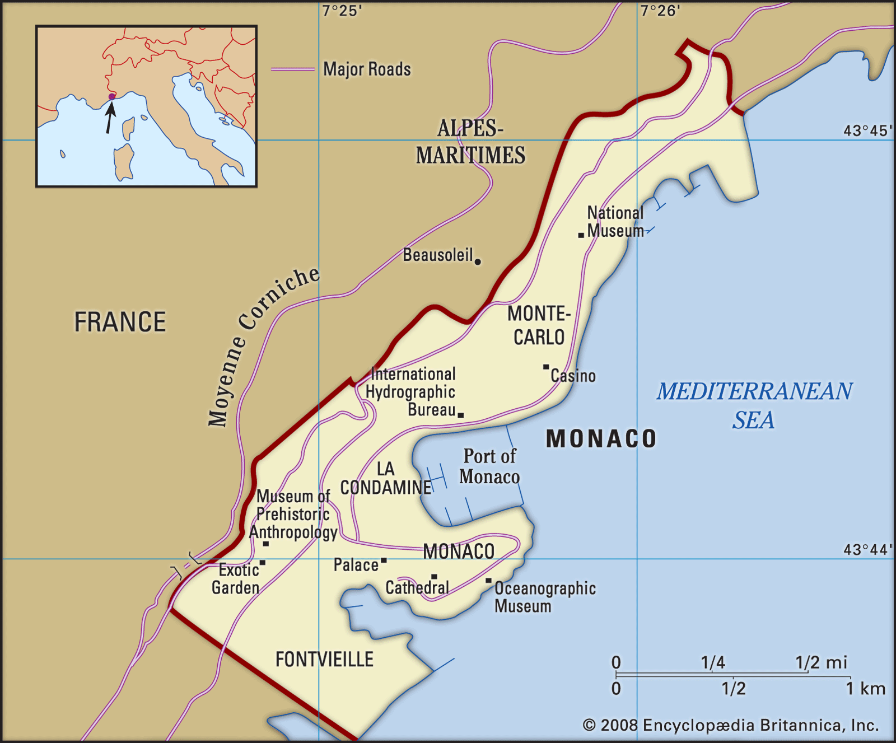
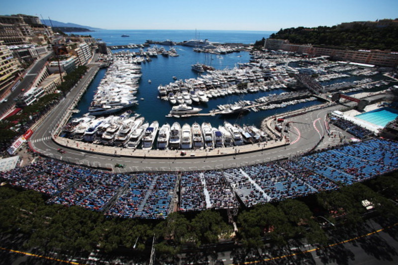

Ubicación del circuito
|  |
El circuito de Mónaco se encuentra en el Principado de Mónaco, un muy pequeño país al sur de Francia sobre el mediterraneo. Al circuito también se le conoce como Monte Carlo dado que gran parte del mismo está dentro del barrio que lleva este nombre. |
|
Mónaco es una ciudad estado de apenas 38,400 habitantes. Queda a 15 kilómetros de la ciudad francesa Niza y a 8 km de la frontera con Italia. Además de las carreras, la ciudad es famosa por sus playas, infraestructura náutica y el Place du Casino en Monte Carlo. |

|
¿Cómo es el circuito?
|  |
Para la Fórmula 1, el circuito es de 3.337 kilómetros. Es un circuito callejero, lo que significa que los pilotos corren sobre lo que usualmente son calles comunes de la ciudad. Durante el fin de semana de la carrera, se cierran las vías necesarias para acomodar el circuito, los pits, y las gradas para los aficionados. El circuito es muy estrecho y no tiene lugares amplios para adelantar, especialmente con los vehículos de Fórmula 1 actuales que son los más anchos de la historia. Pasa por la bahía en el mar mediterraneo y por el icónico túnel. |
|
Se considera la carrera más famosa del campeonato del mundo de Fórmula 1, y a través de los años muchas de sus curvas han recibido nombres especiales:
|

|